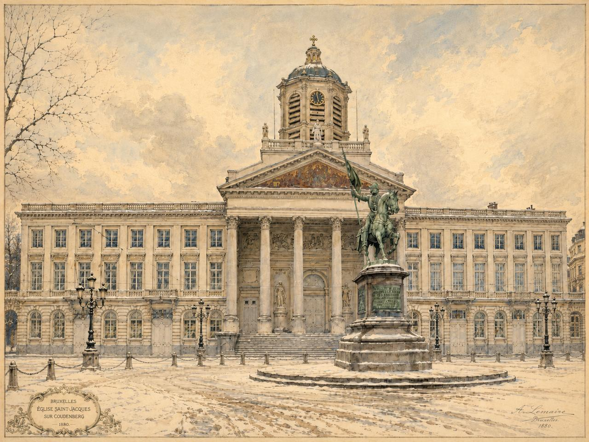
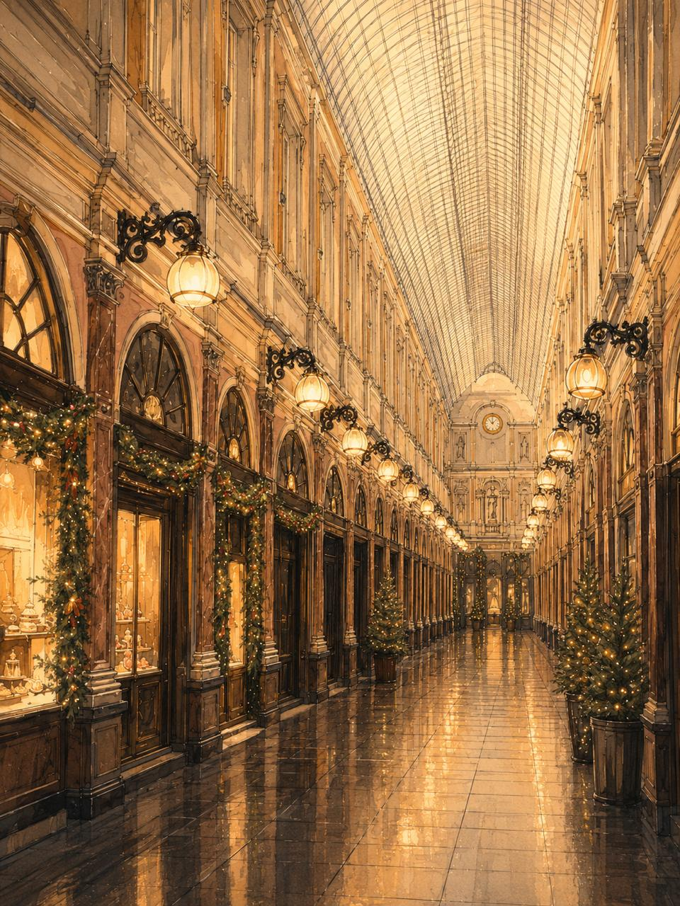
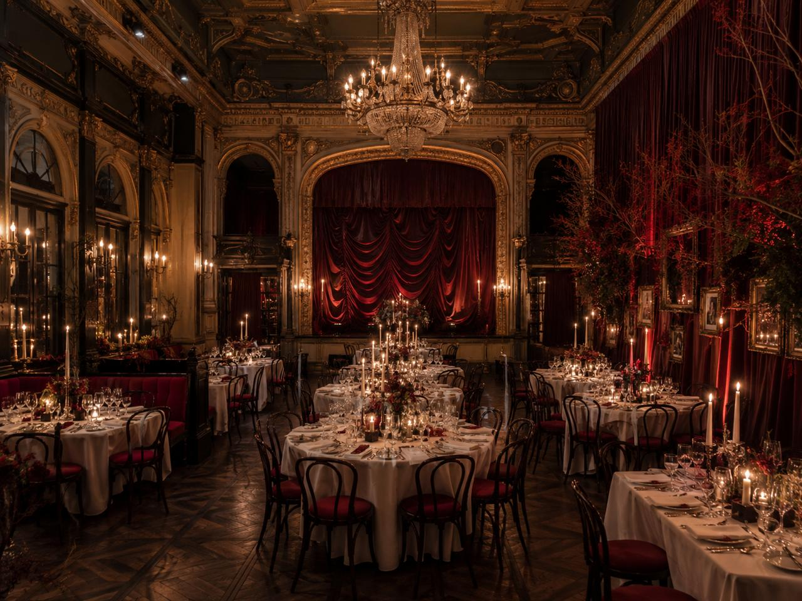
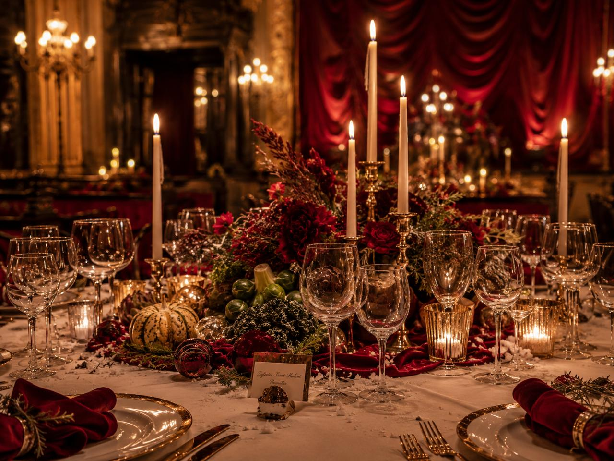
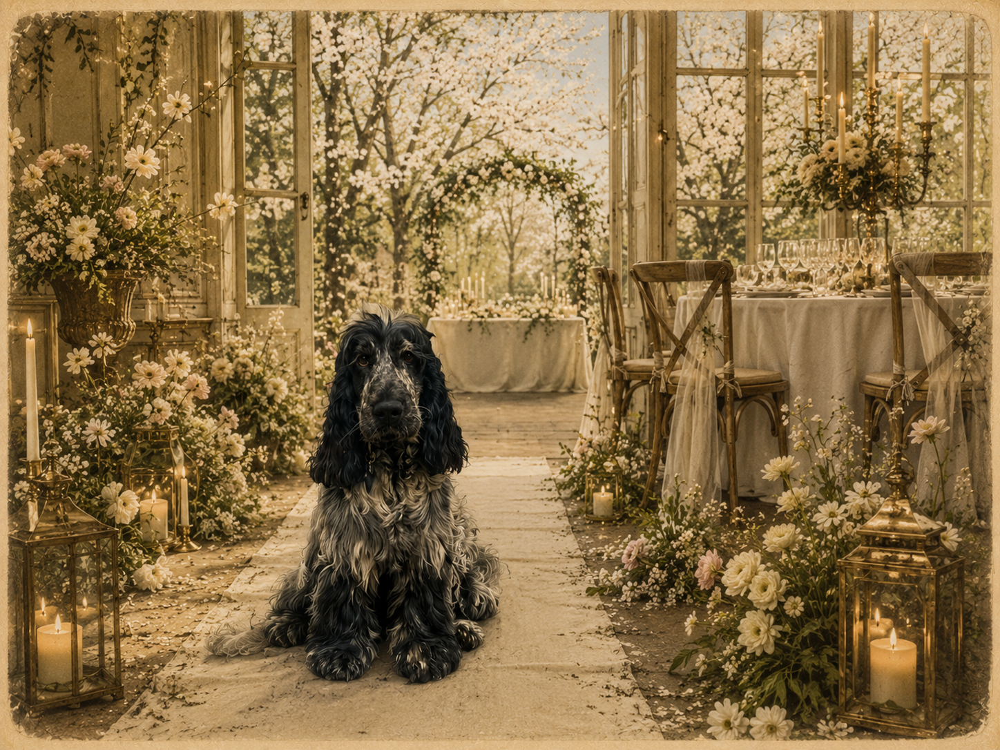

15Friday
Church
Église Saint-Jacques-sur-Coudenberg
Reception
Galeries Royales Saint-Hubert
Dinner
Théâtre du Vaudeville
Party
Théâtre du Vaudeville
Bruxelles · 15 & 16 janvier 2027
Enter the code printed on your invitation.
A winter celebration in Brussels
15–16 January 2027
Church, reception, dinner, dancing — and a late Saturday lunch for those ready to double down for another set.
Réserver votre placeÉglise Saint-Jacques-sur-Coudenberg
Galeries Royales Saint-Hubert
Théâtre du Vaudeville
Théâtre du Vaudeville
Le Flore, Bois de la Cambre
For anyone ready to double down for another set.

Friday · Reception, dinner & party
Théâtre du Vaudeville, Galerie de la Reine 13
Open map ↗
Velvet, candlelight, winter
Red velvet, old Brussels, warm light and a proper dance floor. Elegant, festive and not too serious.



Special mention
Blue roan cocker spaniel, household supervisor and occasional scene-stealer.
Before 30 November 2026
Please tick every part you expect to attend. You may choose more than one answer for each day.
15 January: jacket preferred. No hats for women. Bring your best winter dress.
16 January: relaxed.
All are central and within walking distance or a short taxi ride from the Galeries.
Our list will be hosted on Kadolog.
Open Kadolog ↗Please reply no later than 30 November 2026.
Questions: anaisetharoldgrosjean@gmail.com